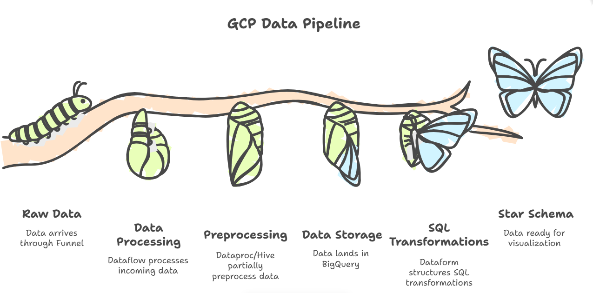
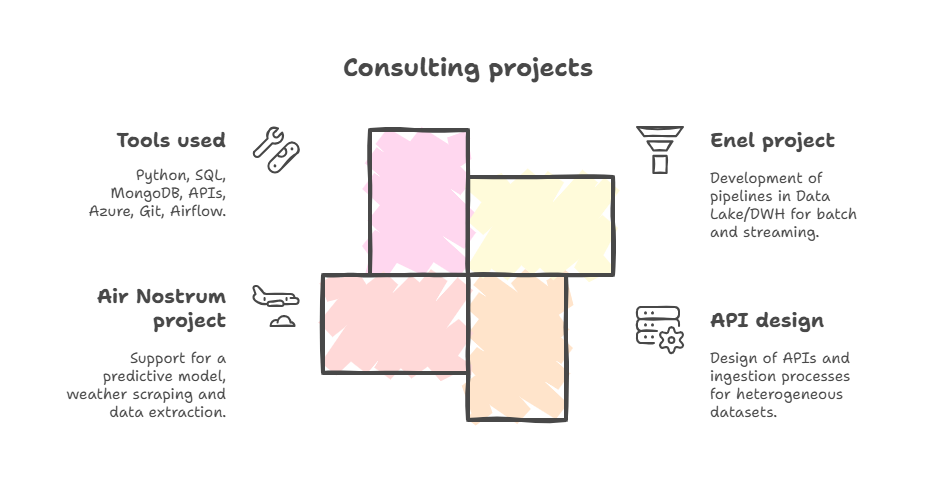
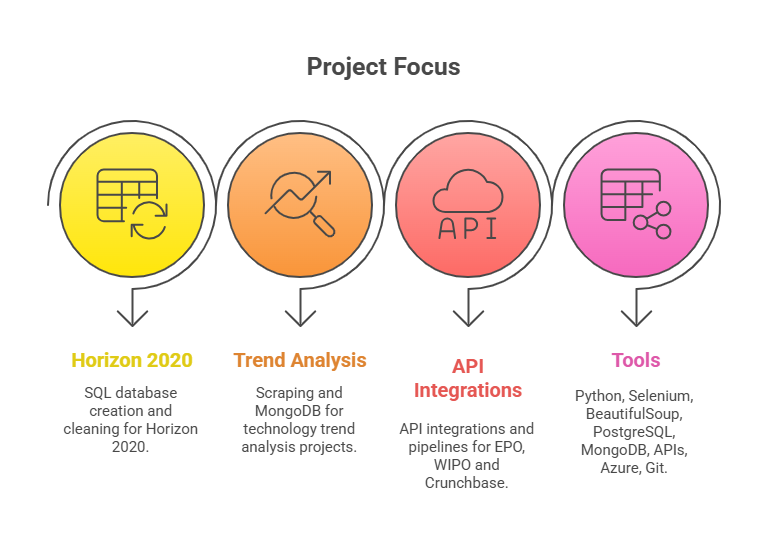
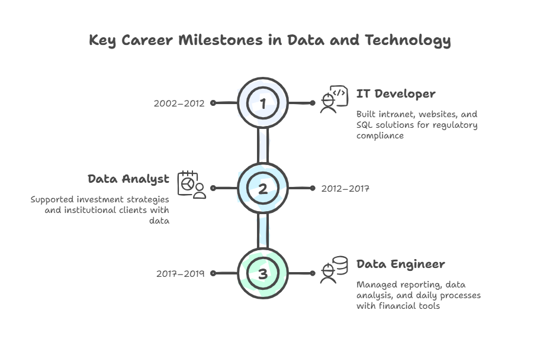

Gestión de proyectos
Planificación, priorización y seguimiento de tareas, coordinación con stakeholders, gestión de riesgos y adaptación a cambios con un enfoque práctico, con Agile cuando tiene sentido.
Ingeniera de datos y cloud con experiencia en coordinación y delivery de proyectos técnicos.
Hago de puente entre negocio y equipos técnicos en proyectos de datos y cloud.
Soy ingeniera de datos y cloud con experiencia en entornos de datos y plataformas cloud (GCP/Azure). A lo largo de mi trayectoria he trabajado en proyectos técnicos colaborando estrechamente con equipos de ingeniería y negocio, participando en la planificación y el seguimiento del trabajo desde un rol principalmente técnico.
Se me da bien explicar lo técnico a quien decide y poner orden en los proyectos.
Además de mi perfil técnico, diseño y desarrollo landing pages y webs sencillas para pequeños negocios, enfocadas en claridad, estructura y captación de contactos.

Aporto una mezcla de visión de proyecto y base técnica para que las decisiones tecnológicas tengan sentido para el negocio y sean sostenibles para los equipos.
Planificación, priorización y seguimiento de tareas, coordinación con stakeholders, gestión de riesgos y adaptación a cambios con un enfoque práctico, con Agile cuando tiene sentido.
Experiencia previa en ingeniería de datos y entornos cloud (GCP/Azure), pipelines, automatizaciones y buenas prácticas técnicas que ayudan a que los proyectos no se queden solo en ideas.
Acompaño a equipos y clientes a entender qué se está haciendo, por qué y cómo impacta en los resultados, buscando que la conversación técnica sea comprensible y útil.
Ejemplos donde se mezcla la parte técnica con el enfoque de Project Management.
Diseño de un flujo de trabajo para convertir notas de la daily en resúmenes claros: bloqueos, próximos pasos y responsables. Estandarización del formato y automatización parcial.
Rol: definición de proceso, prompts, estructura de salida y prueba piloto con el equipo.
Acompañamiento en la transición a soluciones cloud (GCP/Azure), documentando procesos y generando guías para que el equipo pueda trabajar de forma consistente.
Rol: enlace entre negocio, equipo técnico y documentación de buenas prácticas.
Identificación de riesgos técnicos y de planificación (dependencias, deuda técnica, plazos, calidad de datos) y propuesta de medidas mitigadoras.
Rol: análisis, priorización de riesgos y diseño de acciones mitigadoras.
Transición desde la ingeniería de datos hacia un rol de Project Management técnico, combinando experiencia práctica en datos y cloud con un máster en gestión de proyectos.
Diagnóstico y mejora del funcionamiento interno de una empresa familiar de distribución de materiales de construcción. El trabajo parte de la observación directa y las entrevistas con el equipo.
Rol técnico dentro de proyectos de datos y cloud, combinando la actividad con formación intensiva en Project Management. Participación en el análisis, diseño y mantenimiento de soluciones basadas en datos y en la coordinación con otros perfiles.
Consultoría estratégica en capital markets · Gestión end-to-end de pipelines de datos en GCP.

Consultoría en innovación y tecnología, participación en proyectos cloud y modelos predictivos.

Consultoría estratégica en innovación y tecnología · Proyectos orientados a tendencias y DataOps.

Trayectoria completa en datos, análisis, reporting, desarrollo interno y cumplimiento normativo.

Máster especializado en Digital Project Management con enfoque en metodologías ágiles y gestión de proyectos de transformación digital. Formación práctica en liderazgo de equipos técnicos y planificación estratégica.
💼 Proyectos prácticos realizados: El máster incluía un proyecto práctico mensual aplicado a casos reales: definición de OKRs para alinear equipos, prototipo de producto digital con validación de la propuesta de valor, implantación de OKRs en una empresa de formación que quería pasar a la consultoría y app de gestión del tiempo con prototipo funcional en Figma (flujos, interfaz y validación de UX con IA).
Programa orientado a la aplicación práctica de analítica avanzada y tecnologías Big Data para impulsar la toma de decisiones y la transformación digital.
Certificaciones de fundamentos en Azure orientadas a entender la base de los servicios cloud y su impacto en los proyectos.
Descárgalo para tus sistemas de RRHH o para tenerlo como referencia.
Descargar CV completo (PDF)